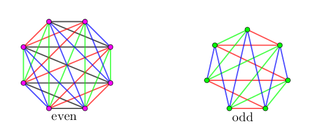

给定一个 $n$ 阶完全图 $K_n$，你需要构造 $K_n$ 的 $m$ 棵不相交的生成树，求 $m$ 的最大值并给出方案。
共一行，包含一个正整数 $n$ ($3 \leq n \leq 2000$)，表示图的阶数。
输出的第一行是一个正整数 $m$，表示生成树的个数。
接下来 $m$ 行，每行 $2 (n - 1)$ 个数，描述一棵生成树，其中第 $2 i - 1$ 和第 $2 i$ 个数表示树中的 一条边。
你需要保证你输出的 $m$ 个子图为 $K_n$ 的 $m$ 棵不相交生成树。
如果有多组解，输出任意一组均可。
吐槽：出题人是有多无聊啊……上次 ([CTSC2016]单调上升路径) 出了一个 $1-$因子分解的构造，这次又出个生成树分解的构造……
证明：$\left| E \left( K_n \right) \right| = \dfrac {n (n-1)} 2$，而每棵树有 $n - 1$ 条边，故 $m \left| T \right| \leq \left| E \left( K_n \right) \right| \Rightarrow m \leq \left \lfloor \dfrac n2 \right \rfloor$。
构造：一句话：之字形构造。图解：
#include <bits/stdc++.h>
int main() {
int n, i, j, g, o;
scanf("%d", &n), printf("%d\n", n / 2);
for (o = 0; o < n / 2; ++o)
for (g = 1, i = n, j = n + 1; g < n; ++g & 1 ? ++j : --i)
printf("%d %d%c", (i + o) % n + 1, (j + o) % n + 1, g == n - 1 ? 10 : 32);
return 0;
}
无